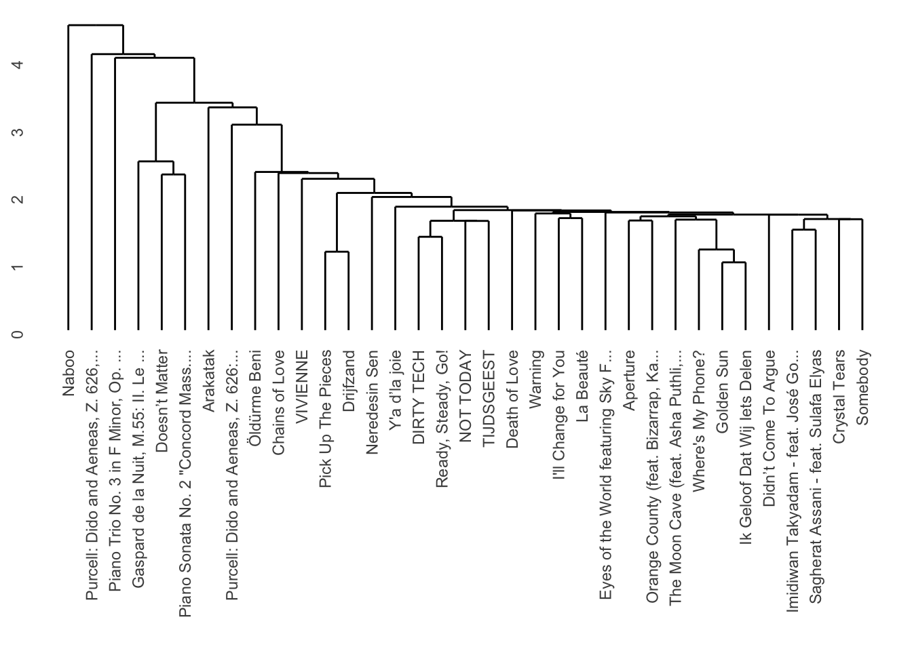

You can download the raw source code for these lecture notes here.
Course Meeting Plan
Wednesday · 18 March · Lecture
Demo: Generative AI for music (10 minutes)
Lecture: Famous MIR applications (20 minutes)
Breakout: Discover Weekly (10 minutes)
Discussion: Breakout results (10 minutes)
Lecture: Classification and Clustering (20 minutes)
Discussion: Classification and Clustering (5 minutes)
Exam info: (5 minutes)
Wrap-up: (10 minutes)
Wednesday · 18 March · Lab
Demo: Hierarchical clustering (15 minutes)
Breakout: Clustering (30 minutes)
Discussion: Breakout results (15 minutes)
Demo: Classification with tidymodels (15 minutes)
Course evaluations (15 minutes)
Breakout 1: Discover Weekly
Choose one member of your group and listen together to some of the songs on their Discover Weekly playlist. Try to make a prediction about the centre of their taste cluster with respect to Spotify API features (e.g., high/low danceability, high/low energy, high/low liveness, etc.).
Suppose you want to use the results of this breakout session to make the claim (or refute the claim) Spotify’s Discover Weekly algorithm can identify users’ musical taste. Would this ‘experiment’ have statistical validity? External validity? Internal validity? Construct validity? Why or why not?
Lab set-up
We will be using the developing tidymodels framework this week for integrating with the different machine-learning libraries in a consistent manner. You can install this package from the usual RStudio Tools menu. All of the other tools that are strictly necessary for clustering are available in base R. For full flexibility, however, the ggdendro and heatmaply packages are recommended. If you want to explore further possibilities, look at the cluster and protoclust packages.
As you work through the breakout sessions, you will occasionally get error messages asking you to install other packages, too. Install whatever R asks for from the Tools menu, and then try running the chunk again. Two helper functions are also included here: get_conf_mat() and get_pr().
library(tidyverse)
── Attaching core tidyverse packages ──────────────────────── tidyverse 2.0.0 ──
✔ dplyr 1.2.0 ✔ readr 2.2.0
✔ forcats 1.0.1 ✔ stringr 1.6.0
✔ ggplot2 4.0.2 ✔ tibble 3.3.1
✔ lubridate 1.9.5 ✔ tidyr 1.3.2
✔ purrr 1.2.1
── Conflicts ────────────────────────────────────────── tidyverse_conflicts() ──
✖ dplyr::filter() masks stats::filter()
✖ dplyr::lag() masks stats::lag()
ℹ Use the conflicted package (<http://conflicted.r-lib.org/>) to force all conflicts to become errors
Loading required package: plotly
Attaching package: 'plotly'
The following object is masked from 'package:ggplot2':
last_plot
The following object is masked from 'package:stats':
filter
The following object is masked from 'package:graphics':
layout
Loading required package: viridis
Loading required package: viridisLite
Attaching package: 'viridis'
The following object is masked from 'package:scales':
viridis_pal
======================
Welcome to heatmaply version 1.6.0
Type citation('heatmaply') for how to cite the package.
Type ?heatmaply for the main documentation.
The github page is: https://github.com/talgalili/heatmaply/
Please submit your suggestions and bug-reports at: https://github.com/talgalili/heatmaply/issues
You may ask questions at stackoverflow, use the r and heatmaply tags:
https://stackoverflow.com/questions/tagged/heatmaply
======================
The NRC, one of the Dutch national newspapers, maintains a Spotify playlist that their music editors feel represents the best new music of the moment. Perhaps clustering can help us organise and describe what kinds of musical selections make it onto the list. You can download an Exportify CSV of this list here.
nrc <-read_csv("../dat/nrc.csv")
Rows: 35 Columns: 24
── Column specification ────────────────────────────────────────────────────────
Delimiter: ","
chr (7): Track URI, Track Name, Album Name, Artist Name(s), Added By, Genr...
dbl (14): Duration (ms), Popularity, Danceability, Energy, Key, Loudness, M...
lgl (1): Explicit
dttm (1): Added At
date (1): Release Date
ℹ Use `spec()` to retrieve the full column specification for this data.
ℹ Specify the column types or set `show_col_types = FALSE` to quiet this message.
Pre-processing
In the tidymodels approach, we can preprocess data with a recipe specifying what we are predicting and what variables we think might be useful for that prediction. For most projects, the track name will be the best choice (although feel free to experiment with others). The code below uses str_trunc to clip the track name to a maximum of 20 characters, again in order to improve readability. The column_to_rownames command is ugly but necessary for the plot labels to appear correctly.
Then we use step functions to do any data cleaning (usually centering and scaling, but step_range is a viable alternative that squeezes everything to be between 0 and 1). This week we discussed that although standardising variables with step_center to make the mean 0 and step_scale to make the standard deviation 1 is the most common approach, sometimes step_range is a better alternative, which squashes or stretches every features so that it ranges from 0 to 1.It’s wise to try both.
When using step_center and step_scale, then the Euclidean distance is usual. When using step_range, then the Manhattan distance is also a good choice: this combination is known as Gower’s distance and has a long history in clustering.
After you have this section of the notebook working with Euclidean distance, try modifying it to use Gower’s distance.
nrc_dist <-dist(nrc_juice, method ="euclidean")
Hierarchical clustering
There are three primary types of linkage: single, average, and complete. Usually average or complete give the best results. We can use the ggendrogram function to make a more standardised plot of the results.
nrc_dist |>hclust(method ="single") |># Try single, average, and complete.dendro_data() |>ggdendrogram()

Try all three of these linkages. Which one looks the best? Which one sounds the best (when you listen to the tracks on Spotify)? Can you guess which features are separating the clusters?
Heatmaps
Especially for portfolios, it can be helpful to visualise hierarchical clusterings along with heatmaps of feature values. We can do that with heatmaply. Although the interactive heatmaps are flashy, think carefully when deciding whether this representation is more helpful for your storyboard than the simpler dendrograms above.
heatmaply( nrc_juice,hclustfun = hclust,hclust_method ="average", # Change for single, average, or complete linkage.dist_method ="euclidean")
Warning in doTryCatch(return(expr), name, parentenv, handler): unable to load shared object '/Library/Frameworks/R.framework/Resources/modules//R_X11.so':
dlopen(/Library/Frameworks/R.framework/Resources/modules//R_X11.so, 0x0006): Library not loaded: /opt/X11/lib/libSM.6.dylib
Referenced from: <C09D78D1-7747-3352-8D6A-DBD3D49D82B0> /Library/Frameworks/R.framework/Versions/4.5-arm64/Resources/modules/R_X11.so
Reason: tried: '/opt/X11/lib/libSM.6.dylib' (no such file), '/System/Volumes/Preboot/Cryptexes/OS/opt/X11/lib/libSM.6.dylib' (no such file), '/opt/X11/lib/libSM.6.dylib' (no such file), '/Library/Frameworks/R.framework/Resources/lib/libSM.6.dylib' (no such file), '/Library/Java/JavaVirtualMachines/jdk-11.0.18+10/Contents/Home/lib/server/libSM.6.dylib' (no such file)
Warning: Using `size` aesthetic for lines was deprecated in ggplot2 3.4.0.
ℹ Please use `linewidth` instead.
ℹ The deprecated feature was likely used in the dendextend package.
Please report the issue at <https://github.com/talgalili/dendextend/issues>.
Can you determine from the heatmap which features seem to be the most and least useful for the clustering? Try modifying the recipe to find the most effective combination of features.
Breakout 3: Classification [optional for self-study]
In order to demonstrate some of the principles of classification, we will try to identify some of the features that Spotify uses to designate playlists as ‘workout’ playlists. For a full analysis, we would need to delve deeper, but let’s start with a comparison of three playlists: Indie Pop, Indie Party, and Indie Running For speed, this example will work with only the first 20 songs from each playlist, but you should feel free to use more if your computer can handle it. You can download the Exportify CSVs here: - Indie Pop - Indie Party - Indie Running
After you have this section of the notebook working, try using other combinations of Spotify workout playlists with similarly-named non-workout playlists.
pop <-read_csv("../dat/indie-pop.csv", col_types ="ccccDnnlcTccnnnnnnnnnnnn")party <-read_csv("../dat/indie-party.csv", col_types ="ccccDnnlcTccnnnnnnnnnnnn")
Warning: One or more parsing issues, call `problems()` on your data frame for details,
e.g.:
dat <- vroom(...)
problems(dat)
As you think about this lab session – and your portfolio – think about the four kinds of validity that Sturm and Wiggins discussed in our reading for last week. Do these projects have:
Statistical validity [somewhat beyond the scope of this course]?
Content validity?
Internal validity?
External validity?
Pre-processing
Remember that in the tidymodels approach, we can preprocess data with a recipe. In this case, instead of a label for making the cluster plots readable, we use the label for the class that we want to predict.
indie_recipe <-recipe( Playlist ~ Danceability + Energy + Loudness + Speechiness + Acousticness + Instrumentalness + Liveness + Valence + Tempo +`Duration (ms)`,data = indie # Use the same name as the previous block. ) |>step_center(all_predictors()) |>step_scale(all_predictors()) # Converts to z-scores.# step_range(all_predictors()) # Sets range to [0, 1].
Cross-Validation
The vfold_cv function sets up cross-validation. We will use 5-fold cross-validation here in the interest of speed, but 10-fold cross-validation is more typical.
indie_cv <- indie |>vfold_cv(5)
Classification Algorithms
Your optional DataCamp tutorials this week introduced four classical algorithms for classification: \(k\)-nearest neighbour, naive Bayes, logistic regression, and decision trees. Other than naive Bayes, all of them can be implemented more simply in tidymodels.
k-Nearest Neighbour
A \(k\)-nearest neighbour classifier often works just fine with only one neighbour. It is very sensitive to the choice of features, however. Let’s check the performance as a baseline.
Warning: Using an external vector in selections was deprecated in tidyselect 1.1.0.
ℹ Please use `all_of()` or `any_of()` instead.
# Was:
data %>% select(outcome)
# Now:
data %>% select(all_of(outcome))
See <https://tidyselect.r-lib.org/reference/faq-external-vector.html>.
Truth
Prediction Indie Party Indie Pop Indie Running
Indie Party 6 6 6
Indie Pop 5 9 5
Indie Running 9 5 9
We can also compute precision and recall for each class.
indie_knn |>get_pr()
# A tibble: 3 × 3
class precision recall
<fct> <dbl> <dbl>
1 Indie Party 0.333 0.3
2 Indie Pop 0.474 0.45
3 Indie Running 0.391 0.45
Random Forests
Random forests are a more powerful variant of the decision-tree algorithm you learned about on DataCamp. Although no single classifier works best for all problems, in practice, random forests are among the best-performing off-the-shelf algorithms for many real-world use cases.
# A tibble: 3 × 3
class precision recall
<fct> <dbl> <dbl>
1 Indie Party 0.381 0.4
2 Indie Pop 0.55 0.55
3 Indie Running 0.526 0.5
Random forests also give us a ranking of feature importance, which is a measure of how useful each feature in the recipe was for distinguishing the ground-truth classes. We can plot it with randomForest::varImpPlot. It is clear that acousticness and liveness are important. Note that because random forests are indeed random, the accuracy and feature rankings will vary (slightly) every time you re-run the code.
Armed with this feature set, perhaps we can make a better plot. It’s clear that the running playlist is low on acousticness, but the party music overlaps heavily with it and also spreads out into the wider acousticness and brightness range of Indie Pop.